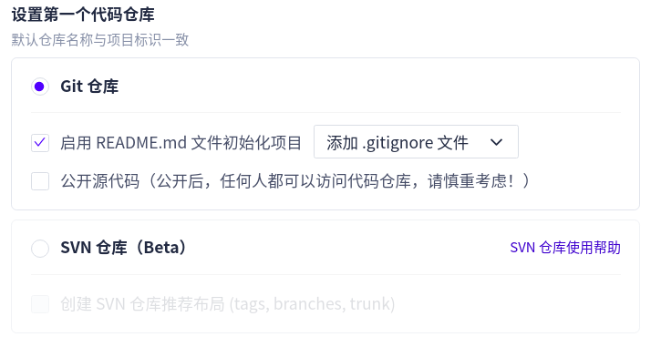

一、安装git、nodejs和npm
注：我打算把node装在我个人的目录下，所以需要下包解压，逐个创建软连接，如果不需要装在个人目录下，只需几行命令就可以安装：
1 | sudo apt install nodejs |
安装nodejs和npm
官网下载新版nodejs，nodejs包里默认包含npm，也可以命令行下载（需要明确版本号）：
1 | wget https://nodejs.org/dist/v13.6.0/node-v13.6.0-linux-x64.tar.xz |
解压到想要存放的目录
1 | unar node-v13.6.0-linux-x64.tar.xz |
进入解压目录确认nodejs版本
1 | cd node-v13.6.0-linux-x64 |
创建软链接（使用 绝对路径）
1 | sudo ln -s /home/lightshaker/node-v13.6.0-linux-x64/bin/node /usr/local/bin |
如果提示
ln: 无法创建符号链接'/usr/local/bin/node': 文件已存在，需要先删除/usr/local/bin/目录下已存在的版本
1 | sudo rm -rf /usr/local/bin/node |
查看node和npm版本
1 | node -v |
安装git
1 | sudo apt install git |
二、安装、配置Hexo
安装cnpm代替npm
1 | sudo npm config set registry https://registry.npm.taobao.org/ #更换npm源为国内源 |
安装hexo
1 | sudo cnpm install hexo-cli -g |
初始化完毕后浏览器地址栏输入 localhost:4000 即可打开博客页面，同时HexoBlog路径下会生成一些文件，用途分别为：
**_config.yml：博客的配置文件**
node_modules: 博客的依赖包
public：存放生成的页面的目录
scaffolds：文章的模板
source：存放文章的目录
themes：博客主题
启动博客、新建文章和编辑文章
1 | hexo s #hexo start 或 hexo server 启动hexo本地服务器 |
生成博客
1 | hexo clean # 清理缓存(public) |
三、分流部署博客到Github和Coding
注：Github是国外平台，Coding是国内平台，二者在国内外的访问速度不一样，同时部署是为了分流访问，国内走Coding，国外走Github，并且双线保障。如果只想部署一个建议部署在Coding上，国内访问比较快。
新建Github个人仓库
登录Github，新建个人仓库，仓库名为 [username].github.io
github.io是github提供的一个静态博客托管功能，只有仓库名符合格式的情况下才生效，所以只能这么写。
新建Coding项目仓库
本人刚用Coding就赶上2020年前的版本改动，现在的Coding把以前的个人版Coding以及腾讯云开发者平台都整合到一起去了，已经不存在所谓的纯个人版Coding，而且仓库的地址也跟旧版本不一样，所以网上部分部署个人Coding的教程都不太适用。最近我也踩了不少坑，为了避免大家再走弯路，这里我会把新版Coding的操作写得具体一点。
进入Coding主页，注册Coding账号（默认团队版）并登录，点击右上角头像
\(\rightarrow\) 团队管理
\(\rightarrow\) 项目设置
\(\rightarrow\)
创建项目，项目的模板选择DevOps项目，选其他的没有构建和部署功能，没办法创建静态网站。项目名和项目标识可以随便写，你能认出这是啥项目就行，勾选git仓库以及使用README.md文件初始化项目，确定即可。

安装SSH并生成个人公共密钥
该步骤非必须，也可使用HTTPS传输协议，只是每次提交代码都需手动输入Git账号密码，设置SSH公钥后每次提交代码时通过私钥匹配，就不用再输密码了，数据传输也非常安全。
安装并启动ssh
1 | sudo apt install openssh-server #安装 |
检查是否启动成功的方式：sudo ps -e | grep ssh，出现sshd说明启动成功
创建git的全局name和email
1 | git config --global user.name [username] |
创建个人ssh公共密钥
1 | ssh-keygen -t rsa -C [useremail]c |
默认全部回车即可，会在~/.ssh/路径下创建私人密钥id_rsa、公共密钥id_rsa.pub以及known_hosts
成功后会输出你的“指纹密钥”fingerprint以及它对应的randomart image，即将密钥转化为有规律的图进行展现，类似二维码，更容易对比密钥的异同。
若要自定义密钥路径以及密码（一般没啥必要，这里不用看了）需要提前手动创建私人密钥id_rsa才能生成公钥：
1 | mkdir sshkeys |
并在Enter file in which to save the key这一步中填写创建的文件夹路径
/home/user/sshkeys/id_rsa，这样会在sshkey文件夹中生成公共密钥id_rsa.pub，之后的passphrase填写自己想设定的密码或者不填都行。
创建完毕后添加私钥到ssh-agent中
1 | cd .ssh |
设置GitHub和Coding的SSH公钥
进入~/.ssh目录 打开终端输入
cat id_rsa.pub，复制公钥全部内容
Github：打开GitHub仓库，点击右上角头像 \(\rightarrow\) setting\(\rightarrow\)
SSH and GPG keys\(\rightarrow\)New SSH key，粘贴公钥内容添加。
Coding：登录Coding，点击右上角头上\(\rightarrow\) 个人设置\(\rightarrow\) SSH公钥\(\rightarrow\)新增公钥，粘贴公钥内容，选择永久有效，添加。
检查密钥是否有效：
1 | ssh -T git@github.com #Github |
安装hexo-git插件
1 | sudo cnpm install --save hexo-deployer-git |
修改 _config.yml 配置内容
若不使用SSH秘钥，就在repo里填仓库的HTTPS地址，若使用SSH就填仓库的SSH地址。
获取地址方式：Github仓库点 clone or download
选择HTTPS地址或者SSH地址；Coding代码仓库页面直接选择。
deploy中repo的格式可以是
repo: [地址],[分支]，也可以是
repo: [地址]然后另起一行
branch: [分支]，其中地址可以指定为github或者coding等等，使用另起一行注明分支时会认为每个仓库都使用该分支。格式举例如下：
1 | #repo格式例1 -- 只部署在github上 |
部署博客
之前的步骤已经 hexo g
生成过博客了，所以只需要deploy将本地Hexo文件推到Github和Coding的仓库内。
1 | hexo d #hexo deploy |
访问博客的方式
注 1：若果没有进行
hexo d部署，那么两个仓库内都是空的或者只有默认文件，访问时可能显示404或者空白页，此时需要在仓库内手动添加一个 html 文件进行初始化，内容自定义。注 2：部署完后Github和Coding的仓库内容都会迅速更新，但是博客页面不一定立即更新。个人测试过，部署在Github上，大概1-3分钟就会更新博客页面，部署在Coding上，从几分钟到大半天都不更新也是有可能的。
Github：直接访问
[username].github.io
就是我们部署在Github上的静态博客地址。
Coding：创建静态网站
进入项目，选择 构建与部署 \(\rightarrow\)
静态网站，点击立即发布静态网站，网站名称随便写，其余项一般默认即可。默认勾选了推送master分支并且自动部署，就不需要在每次hexo d或者修改仓库内容时手动部署了。
创建成功后刷新界面，即可看到静态博客地址
a9yq7w.coding-pages.com ，显示如下：
四、注册个人域名并与博客绑定
在上一步中我们已经完成了Github和Coding双线的部署工作，现在我们既可以通过
Lightshaker.github.io 访问博客，也可以通过
a9yq7w.coding-pages.com
访问博客，如果可以接受这两个形式的域名分别作为自己国内外的博客域名，那以下的步骤就可以无视了；如果想要有一个属于自己的域名，只用自己的域名访问博客，并实现国内外自动解析分流的话，就按照以下步骤继续进行。
购买域名
知名度比较高且较可靠的域名商有：GoDaddy，阿里云万网、腾讯云DNSPod等等，本人是在GoDaddy购买和注册的
Github仓库创建CNAME文件
此处CNAME文件的作用是记录指向该仓库的域名，对Github来说必须要有，而Coding仓库不需要。
可以在Github仓库中直接新建一个名为CNAME的文件填入自己购买的域名。但是每次通过hexo d部署博客时会把仓库内所有文件覆盖掉，所以最好在本地~/HexoBlog/source路径下创建CNAME文件填入域名保存，这样每次部署时仓库里都会有该文件，具体操作如下：
1 | cd /HexoBlog/source # 本地Hexo文件夹中的source目录 |
添加DNSPod记录
注：若同时部署Github和Coding，需要海内外分流进行DNS解析，并且解析的顺序必须是先国内后国外，即在添加记录时必须先添加Coding的记录，然后到Coding的静态网站上绑定域名，SSL/TLS证书申请成功后，然后再添加Github的记录，完成Github的绑定。如果先添加了Github记录，那么在Coding申请证书会一直失败。
获取静态网页的IP
打开终端，用dig [address] +short命令分别获取Coding和Github上创建的静态网页的IP
添加Coding的DNS记录
打开腾讯云DNSPod官网https://www.dnspod.cn/，注册登录，点击管理控制台，选择DNS管理\(\rightarrow\)我的域名\(\rightarrow\)添加域名，输入购买的域名，确认后点击域名进入记录管理页面，原有的两个记录不动，点击添加记录，将Coding获取的IP添加为A记录，将Coding静态网页的地址添加为www的CNAME记录。格式如下：（添加完后面自动加个点是正常的）
A记录是为了将购买的域名直接指向仓库的IP，这样在省略www时也能访问，也是为了Coding上绑定不加www的域名
CNAME记录则是为了将购买的域名指向静态网站的域名，也是为了Coding上绑定加了www主机前缀的域名
| 主机记录 | 记录类型 | 线路类型 | 记录值 | TTL(秒) |
|---|---|---|---|---|
| @ | NS | 默认 | f1g1ns1.dnspod.net. | 86400 |
| @ | NS | 默认 | f1g1ns2.dnspod.net. | 86400 |
| @ | A | 默认 | 124.156.123.74 | 600 |
| www | CNAME | 默认 | j15kdd.coding-pages.com. | 600 |
等待几分钟记录生效，然后进入Coding的静态网站设置界面，拉到底，在
绑定新域名
一栏中填入购买的域名，点击绑定，等几秒后刷新界面，若证书状态一栏显示正常，说明证书已申请通过，若显示
申请失败，查看之前的步骤是否正确操作，特别是不要先记录Github，然后再重来一次。
这里建议同时绑定加www和不加www的域名，并绑定带www前缀的为首选域名，然后勾选另一个为跳转到首选，这样不论加不加都会跳转到加了前缀的域名访问。
上述均完成并且证书均显示为正常后，开启强制HTTPS访问功能，提高数据安全性。
添加Github的DNS记录
同样进入DNSPod的域名记录管理界面，添加刚刚获取的Github
pages的4个IP中的两个(同一个只能加两个，否则会报错子域名负载均衡数量超出限制)，注意将Github的记录线路类型设置为境外。添加完毕后如下：
| 主机记录 | 记录类型 | 线路类型 | 记录值 | TTL(秒) |
|---|---|---|---|---|
| @ | NS | 默认 | f1g1ns1.dnspod.net. | 86400 |
| @ | NS | 默认 | f1g1ns2.dnspod.net. | 86400 |
| @ | A | 默认 | 124.156.123.74 | 600 |
| www | CNAME | 默认 | a9yq7w.coding-pages.com | 600 |
| @ | A | 境外 | 185.199.108.153. | 600 |
| @ | A | 境外 | 185.199.109.153 | 600 |
| www | CNAME | 境外 | lightshaker.github.io | 600 |
修改域名服务器：GoDaddy为例
域名注册后需要选择DNS托管商，默认的托管商就是你购买域名的厂商，因为本人的域名是在GoDaddy买的，托管给国外的厂商会导致访问速度慢以及各种不安全因素，所以我们选择托管到腾讯云的DNSPod。
打开GoDaddy官网，右上角登录，点击头像，选择
我的产品，找到自己买的域名，点击DNS进入DNS管理页面，在域名服务器一栏中点击更改，选择我将使用自己的域名服务器，填入以下两个域名服务器：
1 | f1g1ns1.dnspod.net |
其实就是DNSPod默认的两个记录值，表示DNSPod的域名服务器。至此就把购买的域名的DNS托管给DNSPod了，大功告成，等待一两分钟后就可以通过自己购买的域名访问博客了！
表示DNSPod的域名服务器，至此已完成域名托管。
五、Next主题添加Valine评论系统
使用 LeanCloud 提供的云服务，具体参考Hexo博客进阶：为Next主题添加Valine评论系统
问题记录
部署到腾讯云COS存储桶后，本地博客正常更新，但云端博客不更新
在COS存储桶"域名与传输管理"配置中
仅需配置默认CDN加速域名即可，不需要配置自定义源站域名。
Dnspod中不要同时给cdn和coding-pages-bucket配置CNAME解析，否则在访问博客时会报
NET :: ERR_CERT_DATE_INVALID“您的链接不是私密的”错误，只给cdn配置就行。
本地预览与部署后的网页内容不一致
在修改了permalink以及一些评论相关的配置后，本地 hexo s
预览内容正常，执行 hexo d
部署后，发现远端内容仍然保留了部分旧的url和格式，并且没有评论区。
开始一顿分析原因并尝试了两个方法
优先尝试：浏览器Shift+F5强制刷新
开一个无痕页面，如果博客内容没有问题，说明就是浏览器缓存了旧的数据并直接加载了。
“ Shift + F5 强制Web浏览器忽略其缓存的内容,并将网页的新副本检索到浏览器中 ”
补充：
本博客原先同时部署到 coding.net 以及 github 仓库，并同时使用了两端的静态页面作为部署，因此除了自定义域名外，还有两个静态url可以访问到博客：
- lightshaker.coding.me
- lightshaker.github.io
在腾讯Coding.net系统更新后，我跟着coding.net的跳转提示，将博客资源挂到了腾讯云COS存储桶上，使用了腾讯云的对象存储与CDN加速服务，并借助COS部署了一个静态网站
coding.net.bucket-xxxx 代替 coding.me，但由于本地
_config.yml
中仍使用coding的url作为部署仓库地址，因此从Coding到COS
bucket静态网页的过程我一直都不了解。
在检查完 github.io
确认与本地一致后，问题定位在Bucket上，于是新建了一个存储桶，按照参考博客的流程进行配置，比较重要的步骤有：
- 使用
hexo-deployer-qcloud-cos插件
1 | # 安装 |
- 自定义CDN加速域名
只需配置“自定义CDN加速域名”，不需要同时配置“自定义源站域名”，且注意"源站类型"要选择"静态网站源站"（静态网站源站比默认源站多了个"website"），如果选“默认源站”则无法访问。
另外注意几点：
- 存储桶-权限管理-存储桶访问权限：设置为“共有读私有写”
- 存储桶-基础配置-静态网站：开启“强制HTTPS”
- （可选）自定义CDN加速域名中，配置HTTPS证书、开启回源鉴权并配置CDN缓存自动刷新和图片压缩
- DNS解析
配置完CDN加速域名后，打开DNS解析平台（本文使用Dnspod），添加配置CDN加速时提示的CNAME记录，一般一个@主机一个www主机。无需配置指向存储桶静态域名的CNAME记录。
补充2：
新问题：从不带www前缀的域名访问，内容全部正常，而用加了www前缀的域名访问时，归档页面的博客数量错误，点击进入的博客URL和内容也不对。
解决方法：腾讯云-内容分发网络-域名管理，两个域名共用一个HTTPS证书，并都设置301跳转，然后在域名管理页面刷新不带www的域名的缓存
补充3：插件
1 | npm install hexo-abbrlink --save |